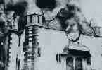
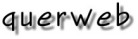

| Der Ziff Davis Verlag hat das Shoah Project in die "Web-Adressen 1111 coole Sites: Spring Edition 1998" unter «Society» aufgenommen |
| Die grofle international "Cybrary of the Holocaust" hat das Shoah Project auf seiner Linksseite aufgenommen. |
|
"Black*Board", inzwischen Österreichs größtes Netzwerk
für Schule und Bildung, schreibt in den
WWW-HOMEPAGES zur Politischen Bildung
Für den Inhalt verantwortlich: Dr.Walter Szevera, Oktober 1997
"Das Shoah Project: http://www.webkonzept.com/ralle/shoah.htm
Anspruchsvolle Seite über verschiedene Aspekte des rassistischen Völkermordes im nationalsozialistischen Deutschland. Viele Links und Berichte zu einzelnen
Themen (z.B. Bundestagsdebatte über die Ausstellung zu Verbrechen der Wehrmacht)."
|
"Das Shoah Project von Birgit Pauli-Haack möchte die Erinnerung an den Holocaust wachhalten und ein Zeichen setzen gegen die Propaganda der Neonazis und Auschwitzleugner. Es ist das erste deutschsprachige Holocaust-Projekt im WWW. Wenn diese Seiten nicht von Bedeutung sind, welche sind es dann?"
16. April 1997
"Seit heute habe ich für die Homepage des Tages bei top.de eine
"Hall ofFame" eingerichtet, auf der meine persönlichen Homepage-Favoriten gelinkt werden. Und Du bist mit Deiner Seite dabei!
Im Anhang findest Du den "neuen", vergoldeten GIF-Orden, der nur der Homepage-Creme zusteht und den Du Dir -wenn Du möchtest- auf Deine Homepage pinnen darfst. :-)"
Rainer Lingmann
Endlich im
" Gegen das Vergessen und Wachsam bleiben-Erinnern
- Das Shoah Project möchte die Erinnerung an den Holocaust wachhalten und ein Zeichen setzen gegen die Propaganda der Neonazis und Auschwitzleugner.
Das Shoah Project wächst!
Neu sind zum Beispiel Infos über die Ausstellung: "Verbrechen der Wehrmacht 1941 bis 1944" sowie Erzählungen von Kenneth Kronenberg über die schreckliche Erfahrung Auschwitz.
Erfreulich ist das neue Layout von Birgit Pauli-Haack, die nicht locker läßt, dem Projekt ein anspruchsvolles Aussehen zu geben.
14. März 1997
Hot Site of the Week
Huschiar Madjidi hat Shoah Project diese Woche im Deutschen Internet Forum von CompuServe als Hot Site of the Week der 12. KW 1997 vorgestellt! Und damit sind wir Teil seines Surfboards.
14. März 1997
Rainer Lingmann von http://www.top.de hat das Shoah Project zur Homepages des Tages ernannt:
Birgits und Ralfs Shoah Project
Ralf P. Grafs Seiten "Gegen das Vergessen" haben schon einmal an dieser Stelle die verdiente Würdigung erfahren.Gemeinsam mit Birgit Pauli-Haack hat er jetzt das Shoah Project ins Web gebracht, auf dem die Erinnerung wachgehalten und für die Zukunft gewarnt wird.
Auseinandersetzung mit dem Problem der Notwendigkeit von Zensur gegen Nazi-Sites, Erzählungen, Interviews und Infos zur aktuellen Ausstellung zu Verbrechen der Wehrmacht... Wer sich informieren möchte, kann das hier umfassend tun.
The Spirit of CyberSpace
Das Surfboard der anderen Art
Shoah Project
Das erste deutschsprachige Holocaust-Projekt im WWW. Das Land der Täter hält sich zu diesem Thema spürbar zurück, während in englischer Sprache Unmengen von Informationen verfügbar sind. Gegen die Propaganda der Ewiggestrigen, der Schönredner und der Schlußstrichzieher wollen wir ein Zeichen setzen. Nur wer weiß was geschah verhindert, daß sich die Geschichte noch einmal wiederholt.
11. Februar 1997
Ralph Segert im

seines KriT-Journals, Nachfolge-Projekt vonKriT - Cyberzine zwischen Report und Satire
Shoah Project
Private politische Initiative ist im deutschsprachigen Web eher noch selten. Umso erfreulicher ist der Start des Shoah Projects, das von Birgit Pauli-Haack und Ralf P. Graf Ende Januar eröffnet wurde. Unter dem Motto "Gegen das Vergessen & Wachsam bleiben - Erinnern!" werden antinazistische Projekte vorgestellt, Erzählungen von "Opfern" des "Holocaust" gesammelt, Interviews geführt und eine Bücherecke und Linkliste gepflegt. Das Projekt fordert auf zur Einmischung und ist offen für Eure Beiträge und Partnerprojekte.